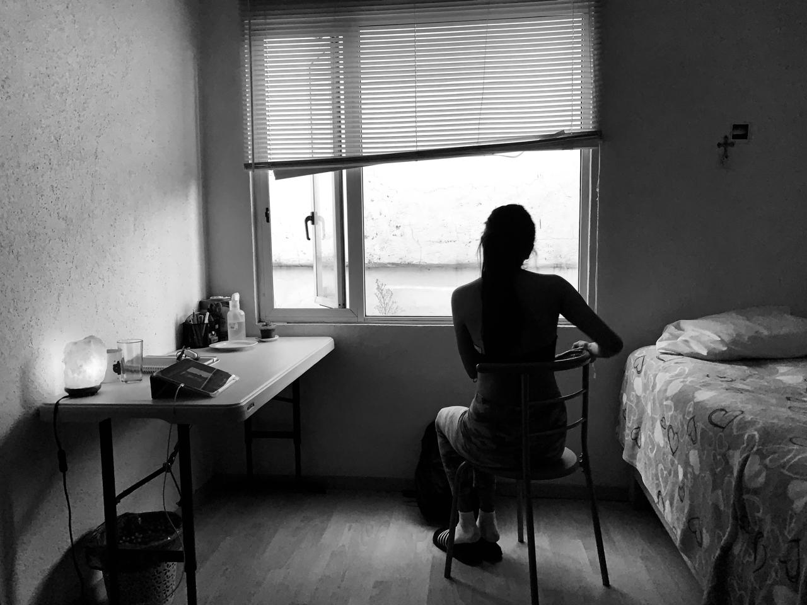

salho
repositorio de obras digitales
2026, en construcción.
ABOUT
Hanna Salazar (Oaxaca, 2003), es una artista formada en la ciudad de Oaxaca de Juarez. Su trabajo se desarrolla en la intimidad de las palabras,
intermediarias entre lo audivisual y lo poético. Bajo esta línea ha desarrollado diferentes proyectos audivisuales donde el archivo funciona
como recurso artístico y detonador de memoria.
En este sentido -memorandúm- se convierte en un espacio donde se reflexiona la relación entre
imagen, lenguaje y experiencia personal, construyendo narrativas sensibles que dialogan con el territorio, la identidad, el recuerdo y la digitalidad.
A través de procesos de recopilación, edición y reinterpretación de materiales digitales visuales y sonoros, crea atmósferas que invitan a la
contemplación, la imaginación o inclusive el olvido. Su obra propone una mirada introspectiva que transforma lo cotidiano en un espacio simbólico cargado de significado.